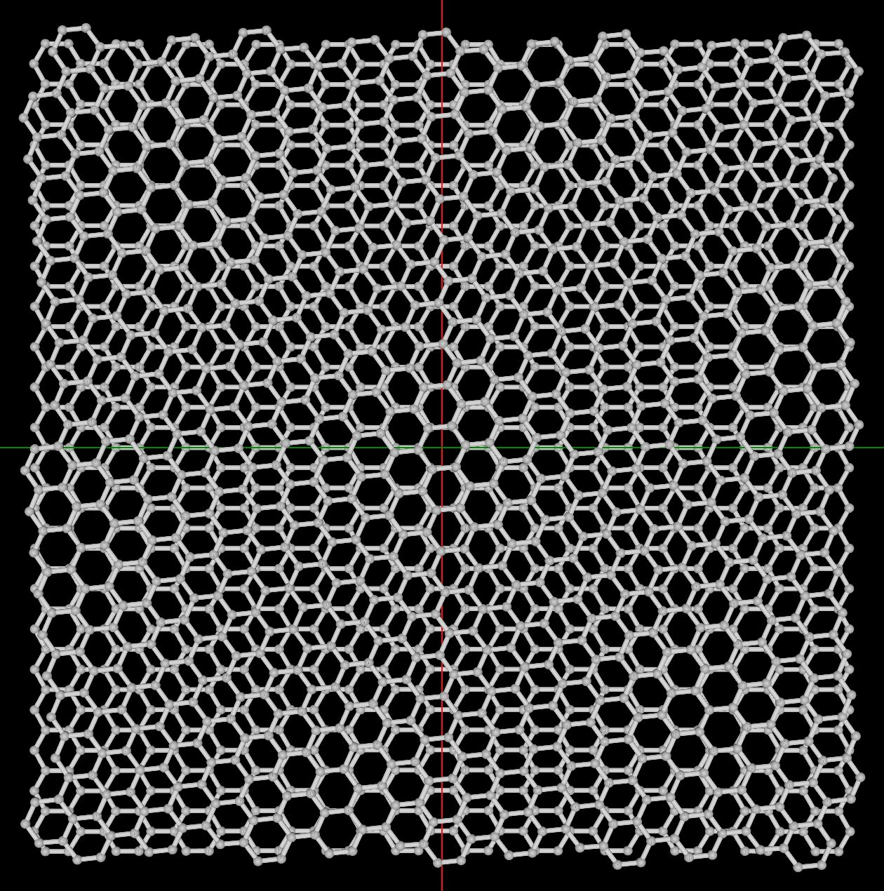
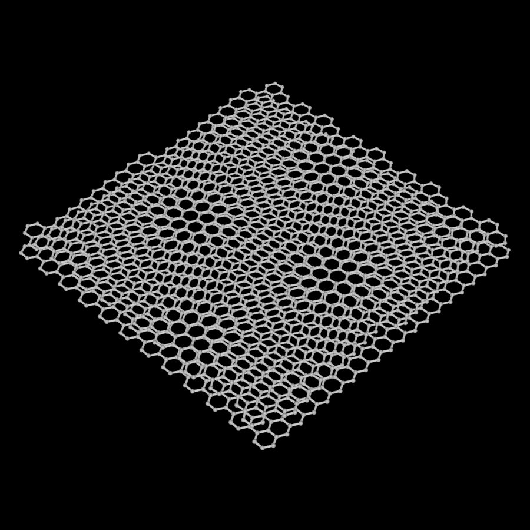
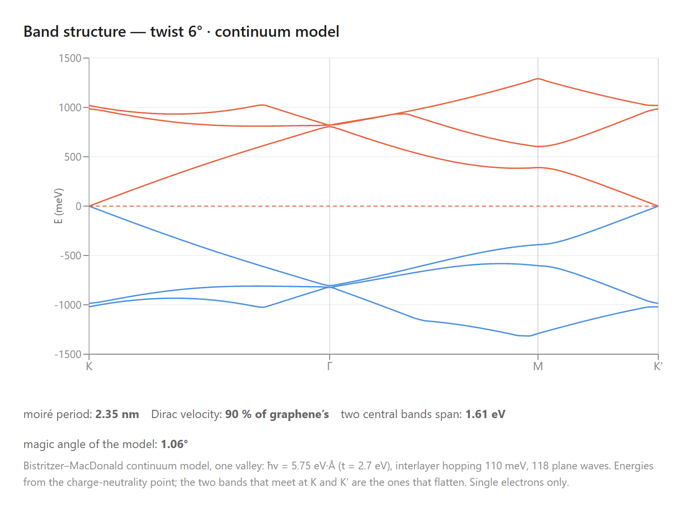
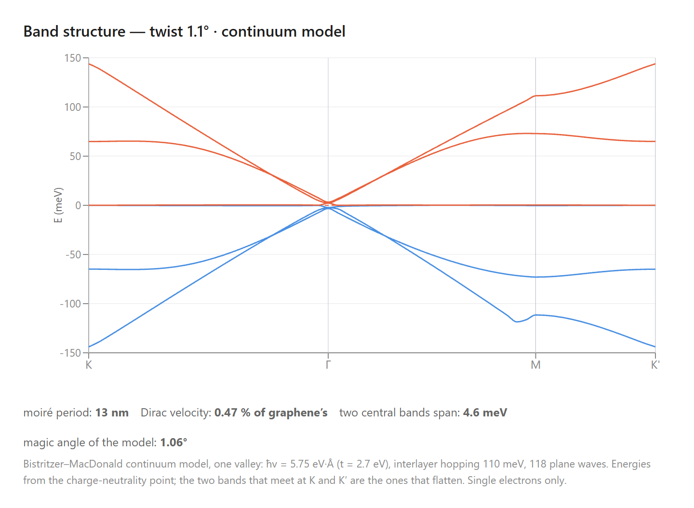
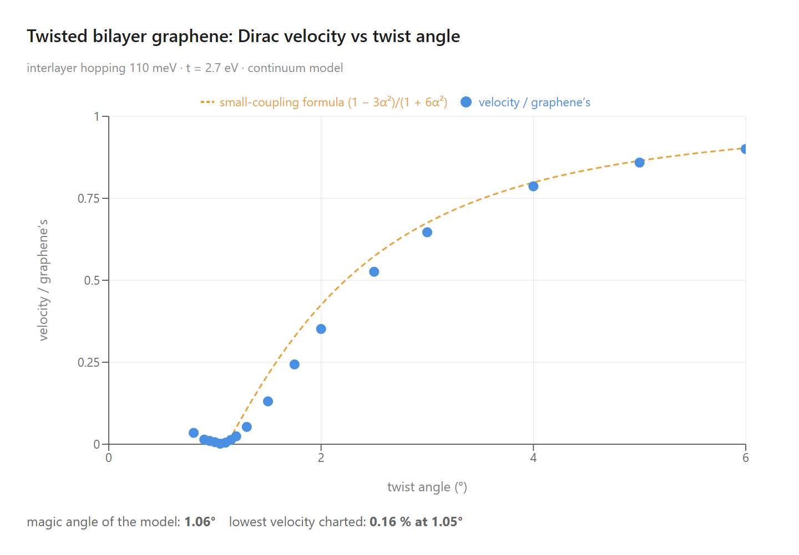

The Magic Angle of Twisted Graphene
Students turn one sheet of graphene on another, compute the bands of its electrons, and find the twist angle at which the electrons nearly stop, with an AI agent in AIMS setting up each calculation they ask for.
Graphene is a flat sheet of carbon atoms joined in hexagons, one atom thick. In 2004 Novoselov, Geim, and coworkers peeled films of carbon only a few atoms thick off graphite and measured how they conduct electricity, and graphene became the first of the two-dimensional materials. Two sheets of graphene are held together only by weak van der Waals forces, so one sheet can be laid on another at any angle. The energy of an electron in graphene is proportional to its momentum, so the electrons that carry a current all move at the same speed, close to a million meters per second. When two sheets of graphene are stacked and one sheet is turned by a small angle, the two lattices fall in and out of step across the sheets. Where a hexagon of the upper sheet lies over a hexagon of the lower sheet, the stack looks open from above. Between those places, the atoms of one sheet cover the hexagons of the other. The open places form a larger lattice of their own, a moiré pattern, and the smaller the twist angle, the larger the pattern.
In 2011 Bistritzer and MacDonald calculated how the moiré pattern changes the electrons. As the twist angle shrinks, the electrons slow down. At a set of angles that they called magic angles, the speed falls to zero and the band of energies that the electrons can have becomes nearly flat. In 2018 Cao, Jarillo-Herrero, and coworkers made two sheets of graphene turned near 1.1°, the first magic angle. When the flat bands were half filled with electrons, the pair was an insulator. When the voltage on a gate added or removed a few electrons, the pair became a superconductor below a critical temperature of up to 1.7 K. The angle between two layers had become a way to tune a material, and the field that grew from these papers is called twistronics.
In AIMS, a student investigates these questions by talking to an AI agent. The student asks a plain-language question, and the agent sets up the calculation that answers it: it builds the two sheets atom by atom, or computes their electrons with the model of Bistritzer and MacDonald, and posts the bands and charts in the chat. The student reads the results and decides what to ask next. This article follows one student's path through four prompts: the moiré pattern at 6°, the bands of the electrons at 6° and at 1.1°, and the speed of the electrons at seventeen angles from 0.8° to 6°. The article on superlubricity turns a flake of graphene on graphene and measures the friction between them, and the article on nanotube conductivity computes the bands of a single sheet of graphene rolled into a tube.
Two Sheets of Graphene with a Twist
The window below shows two sheets of graphene, each 5 nm square, seen from above and drawn as sticks: 1,924 carbon atoms. The upper sheet is turned 6° from the lower sheet about the center of a hexagon. At the center of the window, the hexagons of the two sheets lie over one another and the stack looks open. The open places repeat across the sheets with a period L = a / (2 sin(θ/2)), where a = 2.46 Å is the lattice constant of graphene and θ is the twist angle. At 6° the period is 2.35 nm, and about two periods fit across the sheets.
Two sheets of graphene seen from above, the upper sheet turned 6°. The open places, where a hexagon lies over a hexagon, repeat every 2.4 nm.
The lab relaxes the atoms with the Tersoff model of carbon. Its bonds are 1.453 Å long, 2 % longer than the 1.42 Å bonds of graphene, so in the relaxed lab the pattern repeats every 2.40 nm and the sheets sit 3.41 Å apart. The sheets of graphite are 3.35 Å apart. The pattern in the lab has the same shape as the pattern of real graphene and is 2 % larger.


The two sheets in the lab, seen from directly above (left) and from 45° above (right). The open patches are the places where a hexagon of the upper sheet lies over a hexagon of the lower sheet.
Open The Magic Angle of Twisted Graphene from the list of examples (Nanotechnology, Graphene Nanostructures). Examples belong to their author, so sign in and save your own copy with Save Project As in the Project menu. Then open the chat and type the prompts below.
- Build — “Build two sheets of graphene with the upper sheet twisted by 6°, and show them from above as sticks. What is the pattern?”
- Bands at 6° — “How fast do the electrons move at this twist angle? Compute the bands.”
- Bands at 1.1° — “Now compute the bands at 1.1°.”
- Magic angle — “Chart the velocity of the electrons against the twist angle from 0.8° to 6°. At what angle does it reach zero, and what happens there in the real material?”
The Electrons at 6°
For the second prompt the agent computes the bands with the continuum model of Bistritzer and MacDonald. The model treats the electrons of each sheet as electrons of graphene, which move with a speed v set by ℏv = 5.75 eV·Å (a hopping energy of 2.7 eV between neighboring carbon atoms). An electron can hop from one sheet to the other with an energy w = 110 meV. The model needs the twist angle and these two energies, and no atoms. The chart shows the energies of the electrons along a path through the moiré Brillouin zone, the set of distinct momenta that an electron can have in the moiré lattice. K, Γ, M and K′ are points on that path.
At 6° two bands meet in a cone at K and at K′, the same cone as in one sheet of graphene. The slope of the cone is the speed of the electrons, and it is 90 % of the speed in one sheet. The two bands that meet at K and K′ span 1.61 eV. At this angle the two sheets act almost as two separate sheets of graphene.
Why the Moiré Pattern Matters
An electron in the bilayer moves through a lattice with the period L of the moiré pattern, and its momentum changes in steps set by L. The kinetic energy that graphene gives an electron for one such step is ℏv kθ, where kθ = 4π/(3L). At 6° this energy is 1.03 eV. At 1.1°, where L is 12.8 nm, it is 0.19 eV. The energy of a hop between the sheets is 110 meV at every angle. At 6° the hop is a tenth of the kinetic energy, and the electrons move almost as they do in one sheet. Near 1.1° the two energies are close, and the hops between the sheets change the bands strongly.
Bistritzer and MacDonald wrote the speed of the electrons in terms of one number, the ratio α = w / (ℏv kθ). For small α the speed is (1 − 3α²) / (1 + 6α²) times the speed in one sheet. α is 0.11 at 6° and 0.59 at 1.1°.
The Electrons at 1.1°
At 1.1° the moiré period is 12.8 nm, and one cell of the moiré pattern holds about 10,850 carbon atoms. The lab holds 2,000 atoms at most, so the agent computes this angle with the continuum model alone. The two bands at the center of the chart are nearly flat. They span 4.6 meV, 350 times less than at 6°, and their slope at K is 0.47 % of the speed in one sheet. In this model the flat bands touch the bands above and below them at Γ. The tool also accepts a smaller energy for a hop where the hexagons of the two sheets lie over each other, and with 80 meV there a gap opens between the flat bands and the rest.


The bands at 6° (left) and at 1.1° (right). The energy axis on the right spans one tenth of the axis on the left. Blue bands are filled with electrons and red bands are empty when the bilayer carries no charge.
Finding the Magic Angle
The fourth prompt asks for the speed of the electrons at seventeen angles from 0.8° to 6°. The agent computes the bands at each angle and charts the slope at K as a fraction of the speed in one sheet.

The speed of the electrons against the twist angle (points) and the small-coupling formula (dashed line).
| Twist angle | Moiré period | Speed of the electrons |
|---|---|---|
| 6° | 2.35 nm | 90 % |
| 4° | 3.52 nm | 79 % |
| 3° | 4.70 nm | 65 % |
| 2° | 7.05 nm | 35 % |
| 1.5° | 9.40 nm | 13 % |
| 1.2° | 11.7 nm | 2.4 % |
| 1.1° | 12.8 nm | 0.47 % |
| 1.05° | 13.4 nm | 0.16 % |
| 1° | 14.1 nm | 0.62 % |
| 0.9° | 15.7 nm | 1.4 % |
| 0.8° | 17.6 nm | 3.5 % |
Eleven of the seventeen angles in the chart. The speed is given as a percentage of the speed of the electrons in one sheet of graphene.
The speed falls as the angle shrinks, and a search between the charted angles puts its zero at 1.06°, the magic angle of this model. Below 1.06° the speed rises again, to 3.5 % at 0.8°. The dashed line follows the points above 3°. The formula reaches zero at α = 1/√3, at 1.11° in this model, and the full calculation puts the zero at 1.06°. The magic angle depends on the two energies of the model. A student can ask the agent to repeat the sweep with a different hopping energy between the sheets and watch the magic angle move.
What the Model Leaves Out
The continuum model treats each electron by itself. It gives the flat bands at the magic angle. In a flat band, many electrons have nearly the same energy, and their kinetic energy is smaller than the repulsion between them. The repulsion, which the model leaves out, then decides how the electrons arrange themselves. The insulating state and the superconductivity that Cao and coworkers measured come from this repulsion. The model shows the angle at which they occur, and it does not produce them.
What the Calculations Produced
The calculations were given the lattice of graphene, the speed of its electrons, and the energy of a hop between the two sheets. Everything below came out of them:
- The pattern — two sheets turned 6° make a moiré pattern with a period of 2.35 nm, 2.40 nm in the relaxed lab.
- Bands at 6° — the electrons move at 90 % of their speed in one sheet, and the two central bands span 1.61 eV.
- Bands at 1.1° — the electrons move at 0.47 % of their speed in one sheet, and the two central bands span 4.6 meV.
- The magic angle — the speed of the electrons falls to zero at 1.06° and rises again at smaller angles, to 3.5 % at 0.8°.
Conclusion
This article uses two sheets of graphene with a twist to illustrate a new way to learn science: students converse with an AI agent that turns a plain-language question into a calculation and hands back computed data. The magic angle becomes something students find for themselves in a browser: the moiré pattern of two turned sheets, the bands of the electrons at a large and a small angle, and the angle at which the electrons stop. With an AI agent to set up the calculations, students can take up questions from current research, such as what happens to the electrons when two sheets of graphene are turned by 1.1°, and work through them the way the researchers did: build the system, compute what it does, and compare the result with what was measured.
← Back to AIMS